Case 04 of 18 · The Crash-Test Family
Dramaturgy Crash Lab
Can acting be measured the way a crash test is measured?
132 vignettes for Bola, Shim and Dot in a measured bay, including the 32 Acting Arena challenges, each scored for weight, feet, hands and contact.
How it was made
- Build the bay: grid floor, scale marks and fixed camera positions, so every scene is filmed against the same measures.
- Write each vignette as a small drama: a letter opened, a shoulder touched, a door pushed, a stair missed.
- Run each world through the checker and record the instrument readings beside the film.
What this case teaches
- Acting notes such as "the weight is wrong" become numbers: centre of mass over the feet, foot slide, hand reach, contact frames.
- Three bodies of different sizes doing the same scene expose problems one body hides.
- The checker built here is used by every later case that has a rig.
How it differs. The Physical audited one body. The crash lab measures how bodies meet each other and the room.
First sheet and last sheet
Where the stage started and where it finished.

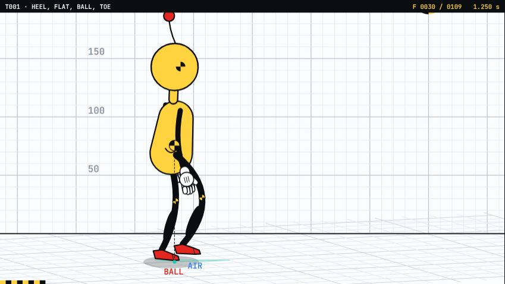

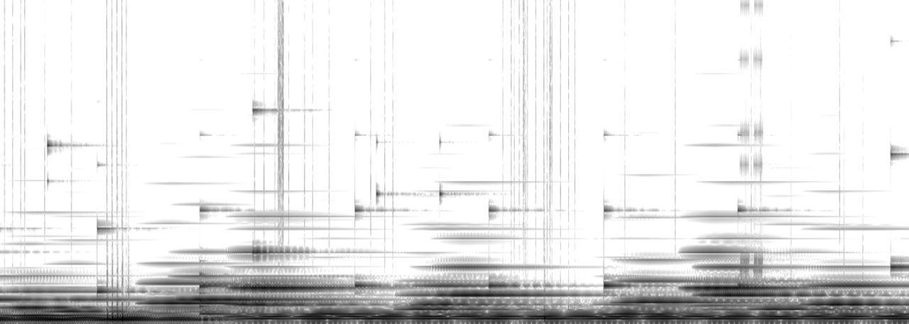
The sheets, step by step
Grouped by working session. Click any sheet to view it full size; use the arrow keys to move through them.

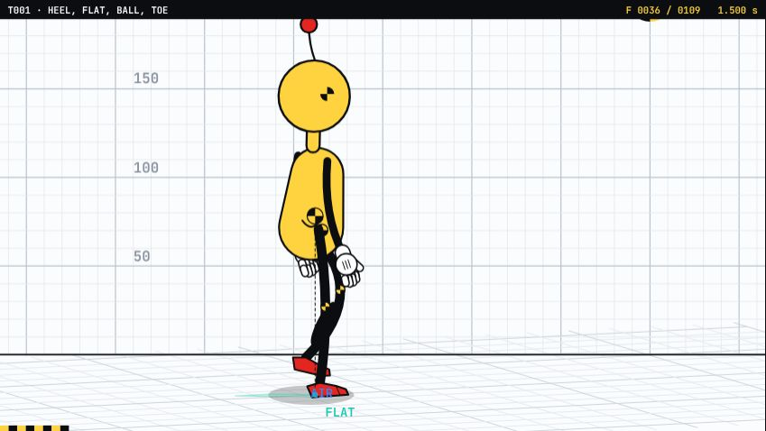

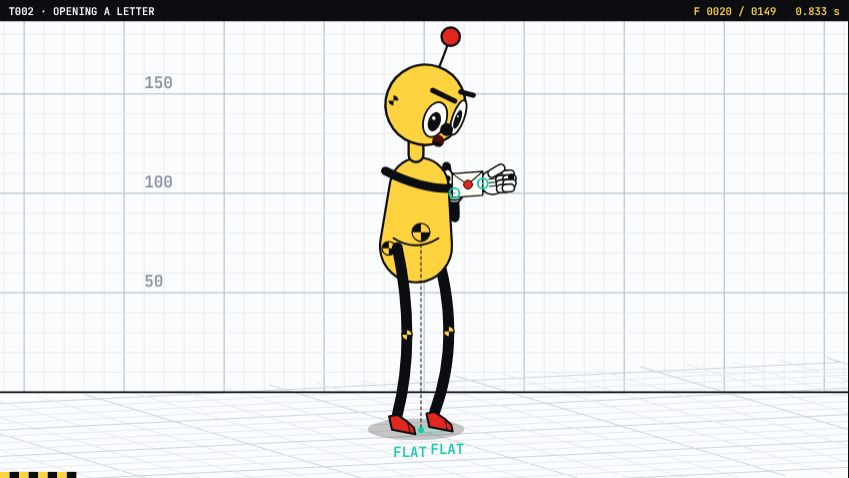

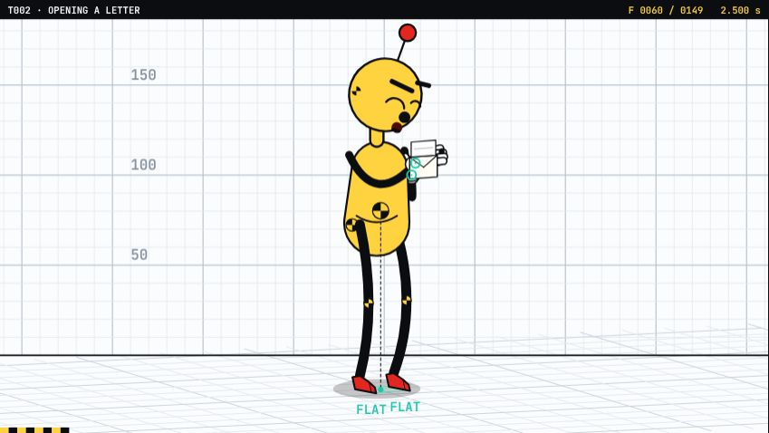
Show 6 more from this step

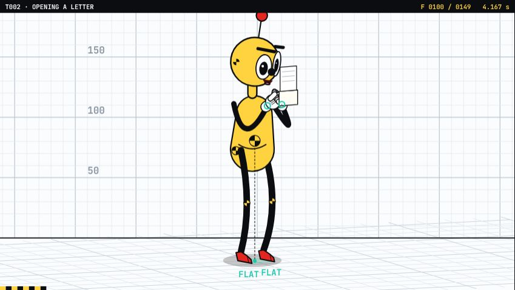

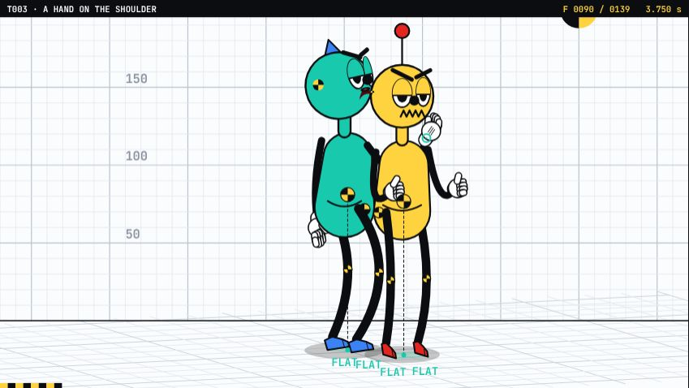

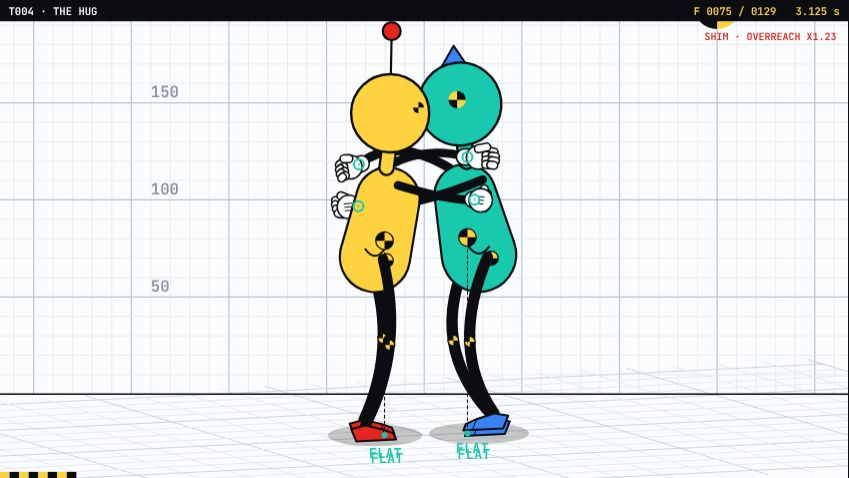

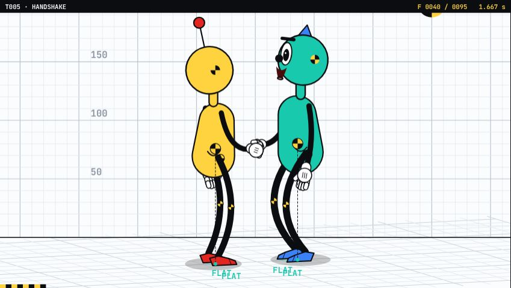

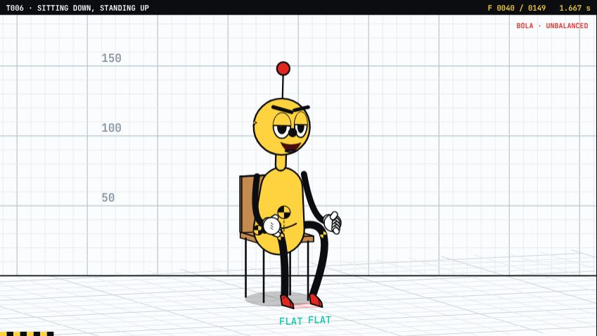

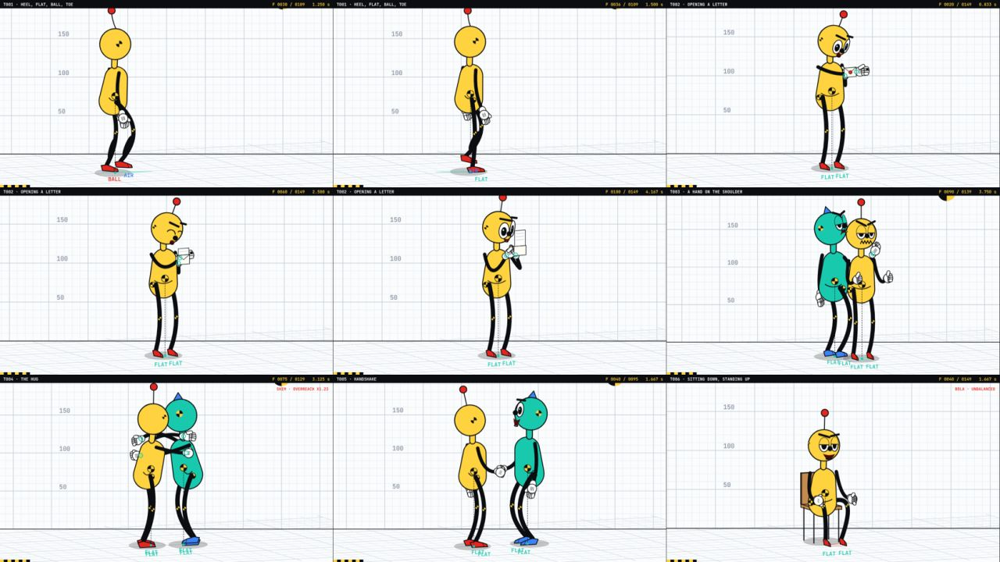

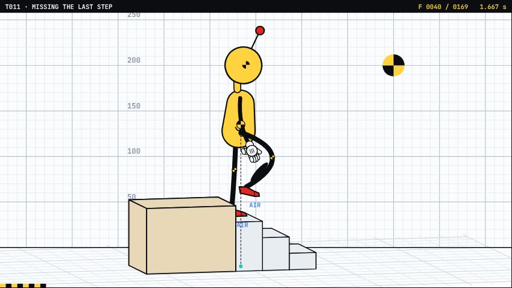

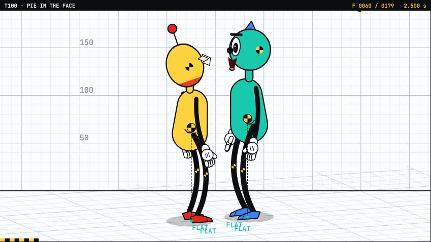

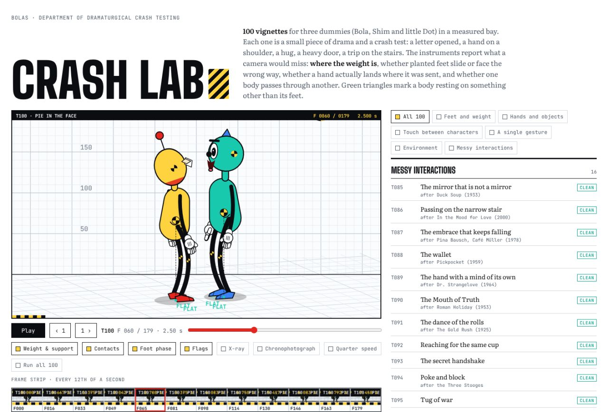

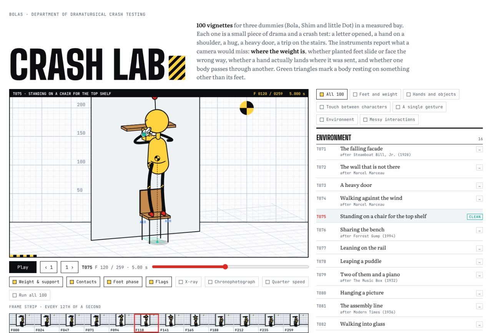
Show 1 more from this step

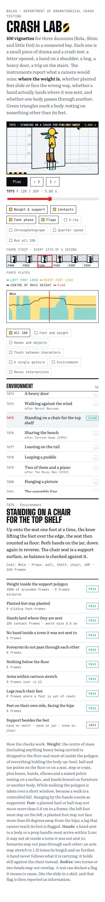

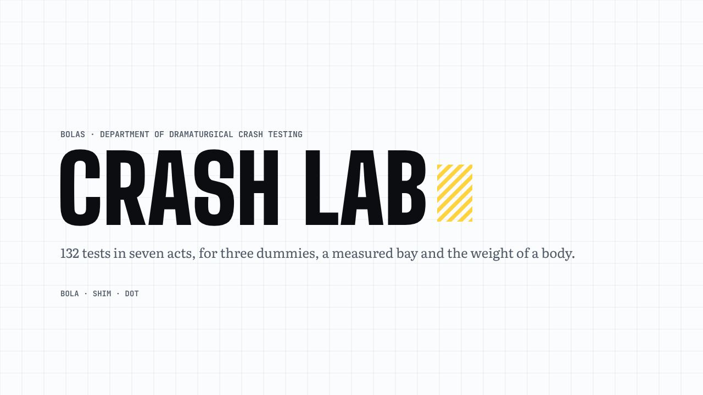

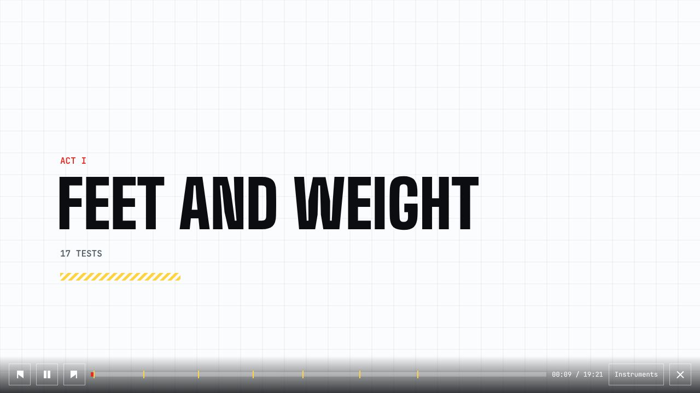

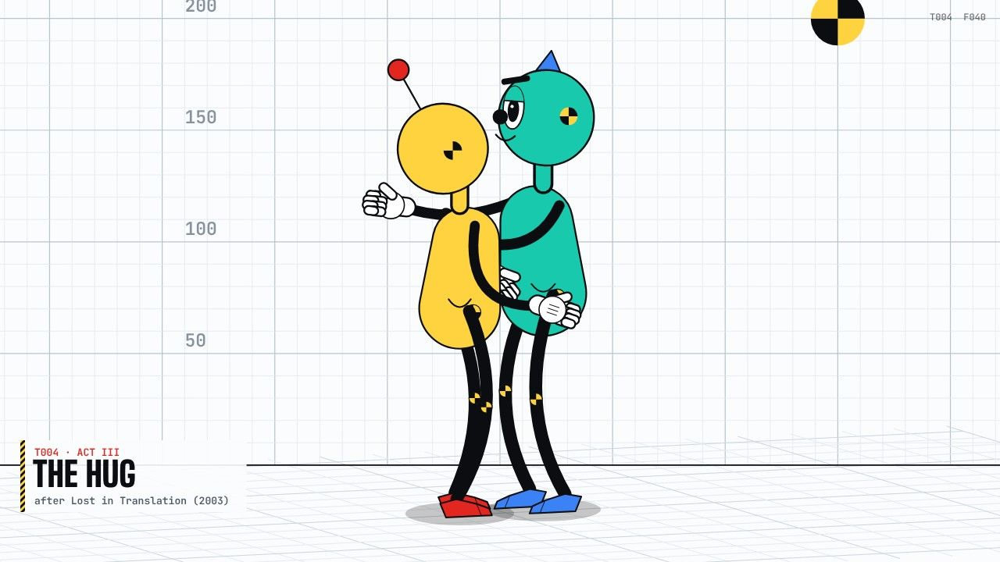

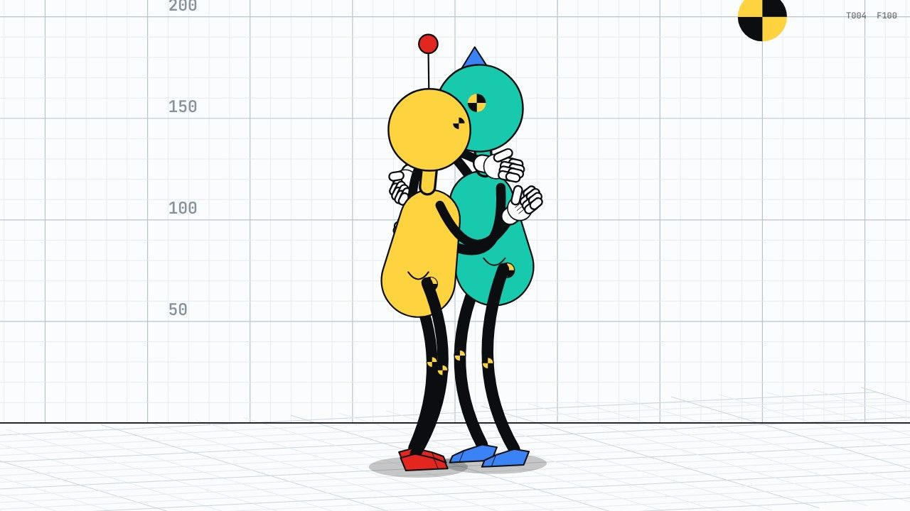
Show 2 more from this step

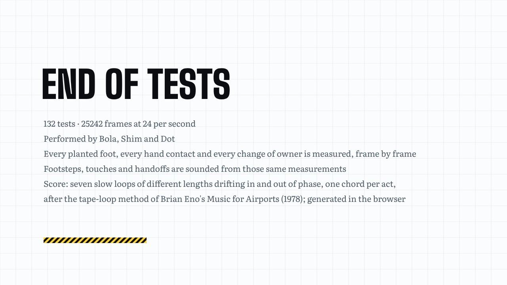
What came out of it
 Dramaturgy Crash Lab132 vignettes for the family in a measured bay, each a small drama and a crash test, then CINEOSIS over 59 more worlds. All-worlds holds the full rig with every world built since, 159 in all.
Crash Lab132 vignettes in a measured bay: letters opened, shoulders touched, doors pushed, stairs missed, and the 32 Acting Arena challenges, each scored for weight, feet, hands and contact.
Dramaturgy Crash Lab132 vignettes for the family in a measured bay, each a small drama and a crash test, then CINEOSIS over 59 more worlds. All-worlds holds the full rig with every world built since, 159 in all.
Crash Lab132 vignettes in a measured bay: letters opened, shoulders touched, doors pushed, stairs missed, and the 32 Acting Arena challenges, each scored for weight, feet, hands and contact.Carried forward
The bay and its instruments become the stage for the 45 CINEOSIS signs.